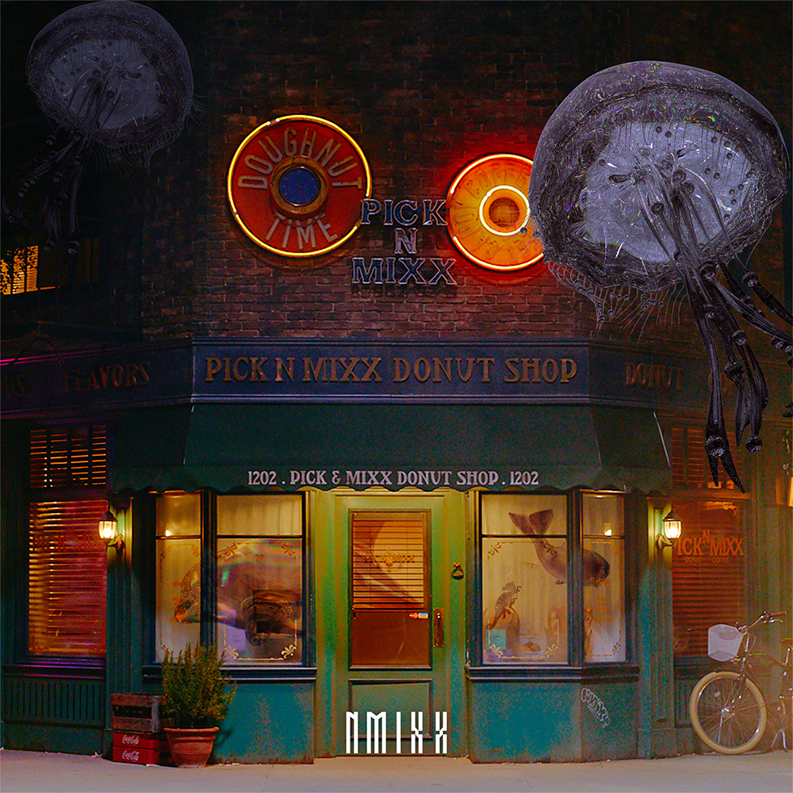

Lily
릴리 · 2002.10.17
JYP ENTERTAINMENT · NEW FRONTIER
探索新世代女團的音樂魅力
NMIXX — 從團體介紹到 MIXX POP
01 / 團體介紹
A NEW GENERATION GROUP
位成員
隸屬 JYP Entertainment，以 MIXX POP 與新世代女團形象為核心。
02 / 成員介紹
릴리 · 2002.10.17
해원 · 2003.02.25
설윤 · 2004.01.26
배이 · 2004.12.28
지우 · 2005.04.13
규진 · 2006.05.26
官方成員頁面提供姓名與出生日期；團內分工未完整列出，因此簡報不推測職務。
03 / 音樂風格
官方定義：將兩種以上曲風融合成風味獨特的歌曲。
另一種理解：歌曲內部保留明顯段落、節奏或曲風變化。
04 / 風格延伸
將不同曲風放入同一作品，形成辨識度高的音樂輪廓。
透過節奏、編曲或曲風轉換，進入不同音樂情境。
「大幅轉換」與「較緩和變化」共同構成 MIXX POP 的光譜。
05 / 專輯作品

DEBUT SINGLE · 2022.02.22
《AD MARE》是 NMIXX 的出道單曲，也是「New Frontier」系列的開端。
06 / 團體發展
未公開團名與成員的《AD MARE》盲盒累積約 60,000 件預購。
以《AD MARE》與《O.O》展開正式團體活動。
獲 MAMA 及 Asia Artist Awards 新人相關獎項。
以不同作品呈現激烈或較緩和的 MIXX POP 變化。
07 / SUMMARY
Lily、Haewon、Sullyoon、Bae、Jiwoo、Kyujin
兩種以上曲風融合，保留明顯的段落與節奏變化
從《AD MARE》與《O.O》出發，延伸新的音樂可能